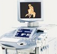
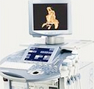

开封圣玛引进的美国GE-E8四维彩超，超越普通四维彩超的局限性，安全无辐射显像更清晰立体，筛查畸形更准确。
想了解更多相关内容>>开封圣玛引进的美国GE-E8四维彩超，超越普通四维彩超的局限性，安全无辐射显像更清晰立体，筛查畸形更准确。
想了解更多相关内容>>唇裂、肺囊腺瘤、腹腔感染、膈疝、十二指肠闭锁、总胆管囊肿、脊柱裂、漏脑畸形、无脑儿、蛛网膜囊肿、脉络丛囊肿...
| 设备 | 特点 |
| B超 | 黑白静态成像，图像不清晰，且需专业人士讲解 |
| 三维彩超 | 静态局部观察，清晰度差，检测不够全面、准确 |
| 美国GE-E8 四维彩超 |
立体、彩色、动态成像，画质比较清 立体、彩色、动态成像，画质比较清晰是目前影像科分辨率更佳的 |
此时胎儿局部结构及运动状态比较清晰，成像效果比较好，可及时发现严重的胎儿畸形、诊断胎儿结构异常。
马上预约擅长应用中腹腔镜、宫腔镜等微创手术治疗输卵管粘连、盆腔粘连等引起的不孕症。多年来成功为无数家庭带来福音，被广大患者称赞为“送子观音”，曾多次被评为“最美医生”。